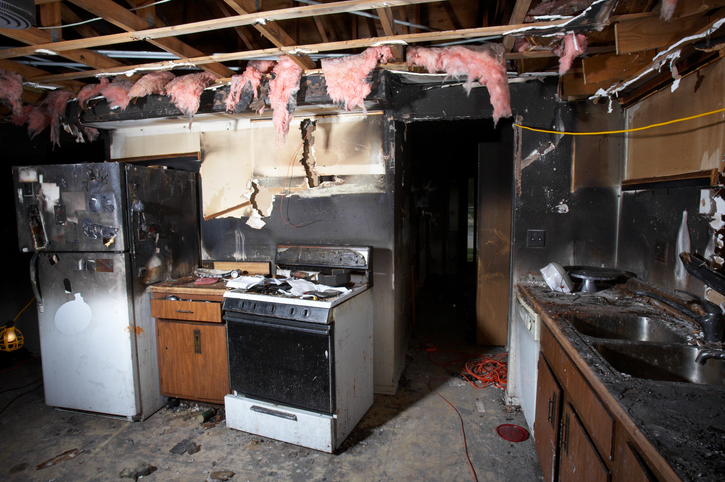

Few events are more devastating than a fire in your home or business. Beyond the immediate danger, the aftermath can feel overwhelming—charred belongings, lingering smoke odors, and water damage from firefighting efforts. In these moments, having a trusted restoration partner is crucial. At SWAT Restoration, we’ve helped countless North Texas families and businesses rebuild after fire damage, bringing both technical expertise and compassionate care.
When you think of fire damage, you may picture burned walls or ruined furniture. But fire damage goes far beyond what you can see:
Understanding these layers of damage is why professional restoration matters.
A DIY cleanup might handle surface messes, but fire damage requires more. Professional restoration ensures:
At SWAT Restoration, we make the process simple and effective:
SWAT Restoration isn’t just another contractor—we’re a local, family-owned company serving communities across Fort Worth, Aledo, Weatherford, Granbury, and beyond. We understand the stress fire damage causes, and we treat every home like our own. Our motto, “First Responders for Disasters,” means we show up fast, with compassion, professionalism, and a clear plan to bring your home back to life.
Recovering from fire damage can feel overwhelming, but you don’t have to face it alone. With SWAT Restoration by your side, you’ll have a team that understands both the urgency of the situation and the importance of family, home, and peace of mind.
If your North Texas home or business suffers fire damage, call SWAT Restoration—your trusted partner in rebuilding and restoring.